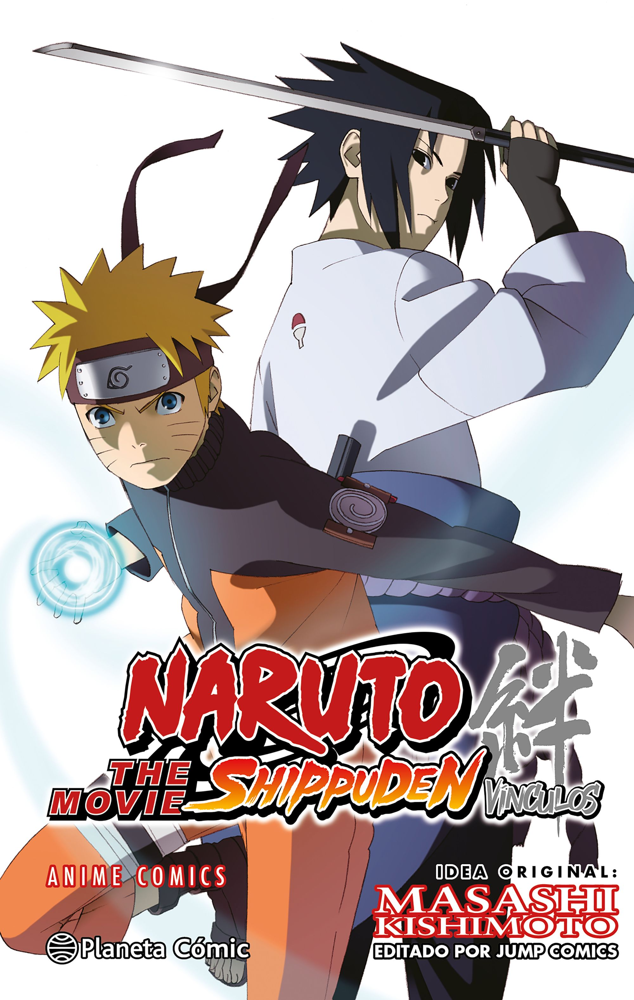
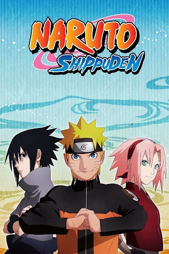
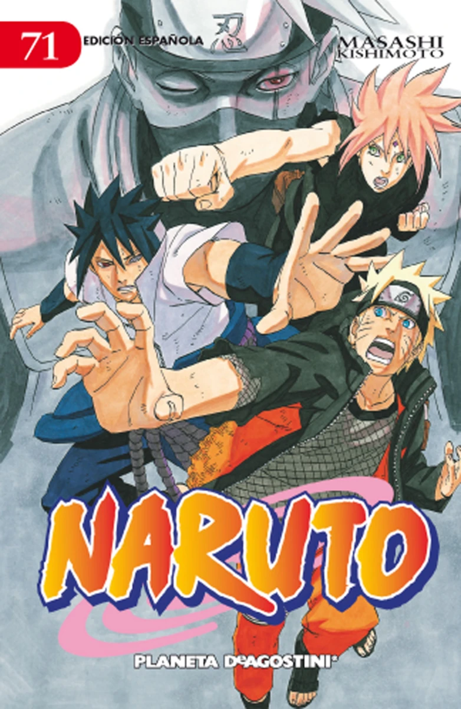
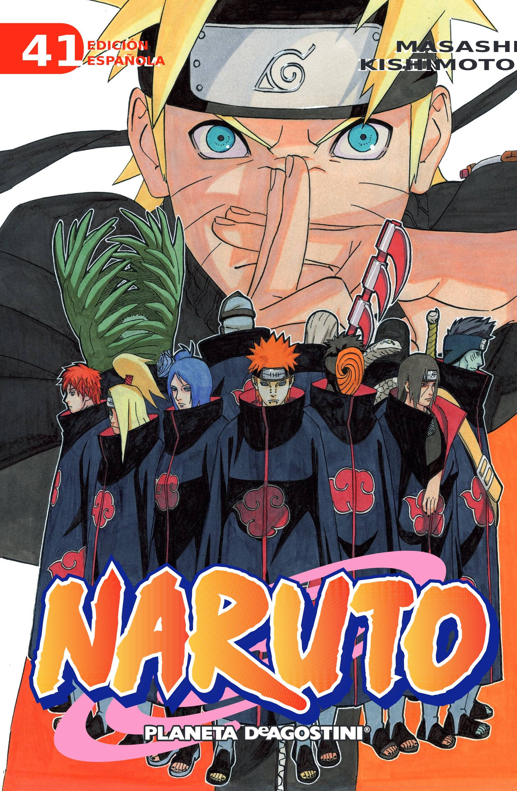

Naruto Shippuden
Masashi Kishimoto
nació el 8 de noviembre de 1974 en Nagi, un pequeño y tranquilo pueblo de la prefectura de Okayama, Japón. Apasionado del mundo de Akira Toriyama, su infancia estuvo marcada por mangas como Dragon Ball y Dr. Slump, que alimentaron su creatividad. Le fascinaba cómo unos simples dibujos podían dar vida a mundos enteros.
Sinopsis
Después de dos años y medio de viaje de entrenamiento con Jiraiya, Naruto regresa a la Villa Oculta de la Hoja algo más maduro, pero igual de escandaloso e impulsivo que siempre. Todos sus antiguos compañeros y profesores de la Academia Ninja han cambiado, Sakura es ahora médico ninja y Kakashi, bueno, sigue siendo Kakashi. Dispuesto a mostrar todo lo que ha aprendido, Naruto es emparejado con Sakura en un combate contra Kakashi, quien queda impresionado con sus progresos. Y pronto podrá poner a prueba sus habilidades porque llegan noticias de que Gaara, antiguo rival de Naruto y ahora Kazekage de la Villa Oculta de la Arena, ha sido secuestrado. Los responsables son el mismo grupo que va tras el zorro de nueve colas de Naruto… ¡los Akatsuki!
Seguidores
- Mario2872
- munaya
- gonzalo
- cielo
- Angel
- pablo32
Lista de Episodios
-  Capítulo 1: Introducción
-  Capítulo 2: Primer Encuentro
-  Capítulo 3: Batalla Épica
-  Capítulo 4: Nuevo Desafío